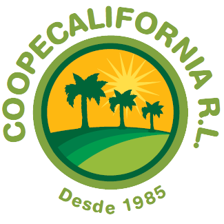
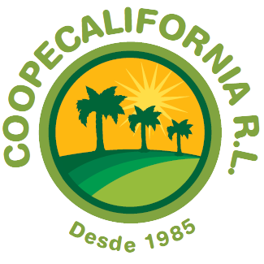

Sistema de Monitoreo Satelital de las Plantaciones de Palma de Aceite en CoopeCalifornia R.L.
SMS-CoopeCalifornia R.L.
Sistema de Monitoreo Satelital de las Plantaciones de Palma de Aceite en CoopeCalifornia R.L. pretende apoyar la gestión de las áreas de cultivo mediante información satelital. Esta iniciativa desarrollada de forma colaborativa entre el Centro de Investigaciones Agronómicas (CIA) de la Universidad de Costa Rica (UCR) y CoopeCalifornia R.L. surge por la necesidad de dotar de herramientas del monitoreo a la Cooperativa, con la cual puedan tener acceso rápido a información de interes para la gestión de las plantaciones.
La pestaña SMS-CoopeCalifornia R.L. cuenta con información histórica y actual sobre las plantaciones de palma de aceite administradas por la Cooperativa y sus asociados, donde usted encontrará la siguiente información:
- Áreas de Producción.
- Historial de Cosecha por Finca.
Seguimiento de las Plantaciones con Información Satelital.
Este modulo brinda a los usuarios la posibilidad de observar la variabilidad espacial y temporal de las plantaciones a través de un App construdio en Google Earth Engine. Este App permite, entre otras cosas, analizar la variabilidad temporal del índice de vegetación NDVI

Sentinel 2 Landsat 8
El índice de vegetación NDVI esta relacionado con la porción fotosintéticamente activa de la vegetación; valores cercanos a 0,9 representantan alta cantidad de vegetación y valores cercanos a 0,2 representan suelo descubierto. Variaciones temporales abruptas en el índice pueden estar relacionadas factores atmosféricos (nubes o sombras de nubes).
 
